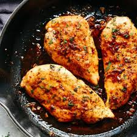

Chicken Recipe
Homepage

Description
Chicken Breast is essential for a protein based diet, and everyone should know how to cook it. Today, we will be teaching you an easy way to make chicken breast that you can use in many of your meals. Let's get started
Ingredients
- Chicken Breasts
- Olive oil (or any cooking oil)
- Seasonings of choice
Steps
- Butterfly your chicken breasts or cut them in half
- Season both sides of chicken breast with desired seasonings
- Put a pan on medium high heat and sprinkle a small touch of cooking oil
- When pan gets to medium high heat, place breasts on pan.
- Cook on both sides for about 4 minutes